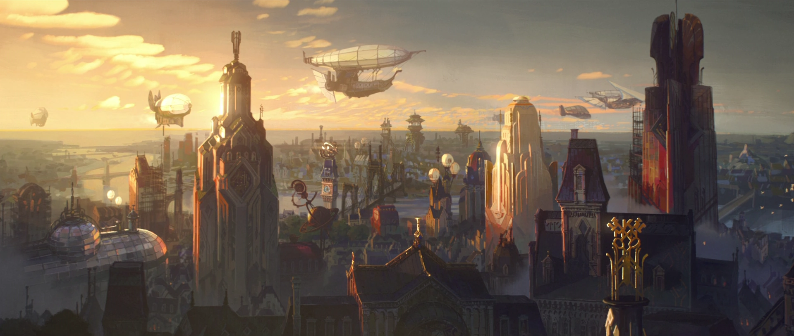

Places#
Regions#
 Escann (Old Castanorian for Eastern Cannor) is the easternmost region of Cannor. It is bordered to its east by the Serpentspine Mountains, to its north by Gerudia, to its south by Bulwar,
and to its west by Western Cannor. Escann has historically been divided into three major regions Inner, West, and South Castanor, which are so named due to their having been the domain of Castanor and its successor, Black Castanor.
Beginning in the Age of Witch Kings, cartographers, politicians and commonfolk alike have reincluded the Deepwoods as part of the region after its reintegration at the end of the Greentide.
Escann (Old Castanorian for Eastern Cannor) is the easternmost region of Cannor. It is bordered to its east by the Serpentspine Mountains, to its north by Gerudia, to its south by Bulwar,
and to its west by Western Cannor. Escann has historically been divided into three major regions Inner, West, and South Castanor, which are so named due to their having been the domain of Castanor and its successor, Black Castanor.
Beginning in the Age of Witch Kings, cartographers, politicians and commonfolk alike have reincluded the Deepwoods as part of the region after its reintegration at the end of the Greentide.
With the final collapse of Black Castanor came an end to a fifteen century legacy. Emerging from the chaos and disorder were a number of smaller states stemming from either historical provinces or were founded by veterans of the War the Sorcerer-King. Such examples are the Kingdom of Acengard, a state alleged to have been under the influence of the Infernal Court, the The Genrasi City State ruled by hero Alex Roth who slew the Sorcerer-King Nichmer, causing a civil war in the kingdom of Castanor resulting in two warring state named Cast led by the old monerchy and Anor led by the nobility.
During this period, there was a general aversion to direct warfare, an effort to avoid the cataclysms that led to the fall of Castanor. Instead, many conflicts were resolved by tournaments, knightly duels and controlled small scale battles. Over the course of this period, these were codified into what is now known as the Trial by Chivalry.
Countries#
Corintar#
Founded shortly after Corin’s death at the Battle of Castonath, the Corintar order was at first, simply one of many adventuring groups attempting to reclaim Escann from The Greentide. With the evangelizing efforts of Dominic of Gallowspeak and Lothane, Corintar became the center first of Corin’s ascension to the Regent Court pantheon and later, when Castellos’s death was revealed during the Age of Unraveling, the center of the new Corinite faith.
Cities#
Oldhaven#
Located near the Gate of Escann, Oldhaven is a city of ancient origins now burdened by the challenges of war and survival. It is ruled by Duke Marlowe Greystone, whose authority is confined to the city and its immediate surroundings. Despite his limited power, Duke Greystone’s leadership is critical as Oldhaven faces a growing influx of refugees fleeing orc invasions, compounding an already dire food shortage.
The city is divided into three distinct districts:
Highspire Quarter: Home to Skyward Keep, the Duke’s seat of power, and the Oldhaven Academy of Tactics and Lore, preserving the traditions of Escann.
Riversmeet: A bustling commercial hub along the Alderflow River, now overwhelmed by overcrowding and scarcity of resources.
The Hollow: A historic and shadowy district known for its artisans and rumors of hidden cults.
Despite its struggles, Oldhaven remains the host of the famed Trial by Chivalry Tournaments, held in the Plains of Valor just outside its walls. These tournaments offer fleeting unity and hope in a city grappling with the effects of the ongoing war between Cast and Anor.
Generasi#
 The city of Generasi has developed significantly over the last 1000 years. While still familiar in some ways—with landmarks, like the Roth bakeries and the university—you’ll now find that the entire city has been teleported to the top of the Kargloth a mountain in the Serpent Spine.